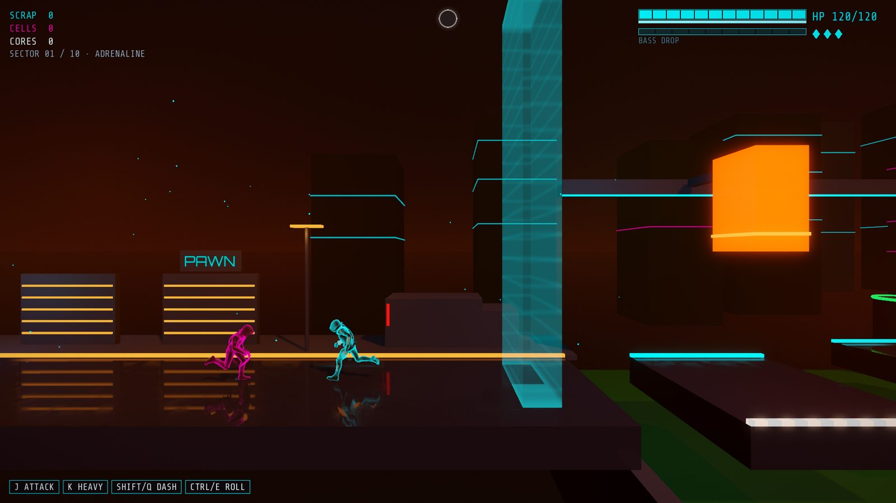

Saint Manick
A 2.5D action-roguelite beat'em up.
Saint Manick is set in a decadent, neon-drenched dystopian city. You play Nick, a rogue corporate enforcer with a bionic arm and a katana, cutting through the city's districts toward the great central tower. Karen guides him through a surveillance drone, and that drone's feed is the game's camera. The world keeps the beat: enemy attacks and traps are timed to a tempo that rises with the fight, and you are never forced to act on it.
Status: in development, early stage. A playable ten-zone vertical slice exists, with placeholder art and audio. Much of the game is still to be built, and this site will be updated as it grows.